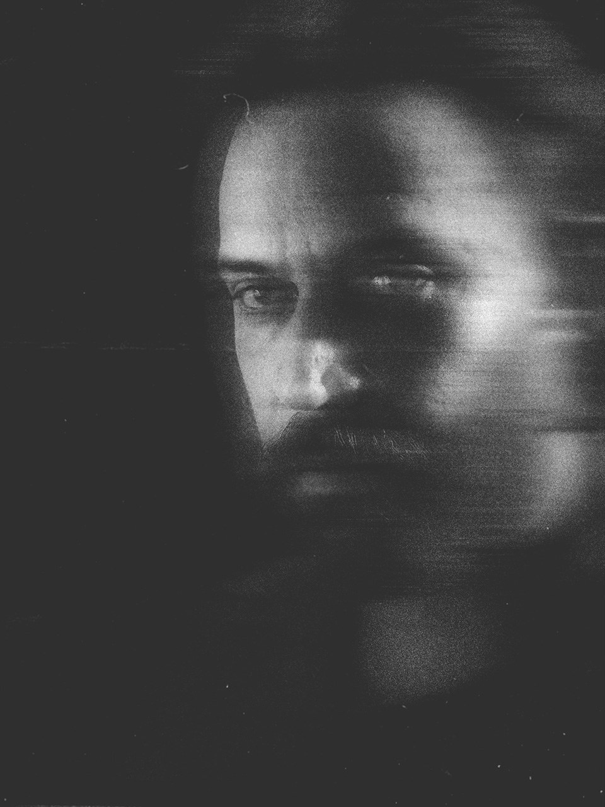

Ricardo Rapozo

Sua trajetória começou na televisão, no fim dos anos noventa, e atravessa quase três décadas de audiovisual entre publicidade, documentários, televisão e projetos autorais. Nesse percurso, passou pela ilha de edição, direção, preparação de atores, motion design e pós-produção, construindo um olhar que transita entre diferentes etapas do fazer audiovisual.
Nunca enxergou essas áreas como disciplinas isoladas. Para ele, todas respondem à mesma pergunta: como uma ideia ganha forma, ritmo e significado? Hoje, desenvolve projetos do conceito ao acabamento final, unindo pesquisa, roteiro, direção, montagem, animação e finalização em um mesmo processo criativo. O movimento é consequência de uma estrutura bem construída.